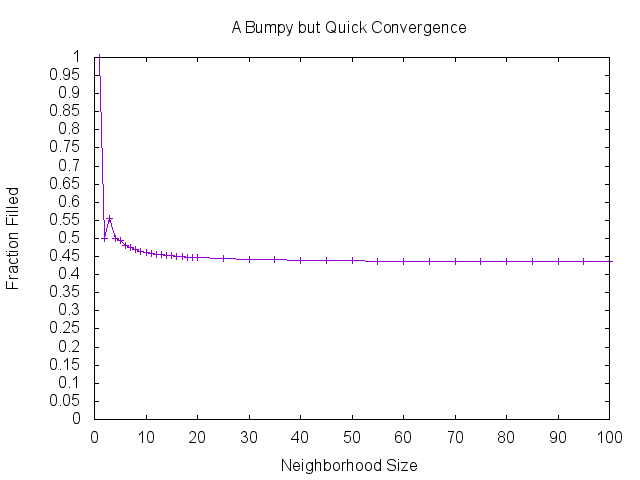
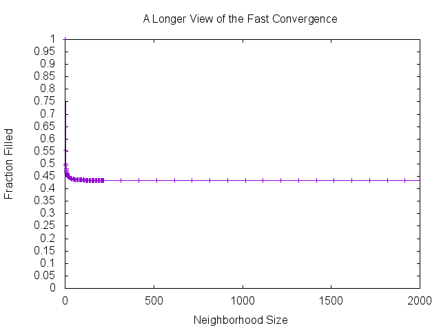

This Misanthropic Neighbor, a Computational Approach
Table of Contents
1 The Answer
The answer is 115/266 or as I like to think of it, a wee bit more than 3/7 which is about 43%.
2 My Original Approach, a Monte Carlo Simulation
2.1 Approach
I program for a living, so when a coworker walked into my office and described the problem as well as what he thought was the answer, I immediately decided to write a Monte Carlo simulation to give me a quick numerical answer. This allowed me to quickly determine that his answer was not correct.
2.2 Sample code for a naive Monte Carlo simulation
sub getAvailableSpots { my (@aHouses) = @_; my @aAvailableSpots; my $iHouseCount = scalar(@aHouses); push(@aAvailableSpots, 0) if !$aHouses[0] && !$aHouses[1]; push(@aAvailableSpots, $iHouseCount-1) if !$aHouses[$iHouseCount - 1] && !$aHouses[$iHouseCount - 2]; for (my $i=1; $i < $iHouseCount - 1; $i++) { if (!$aHouses[$i] && !$aHouses[$i-1] && !$aHouses[$i+1]) { push(@aAvailableSpots, $i); } } return @aAvailableSpots; } for (my $i=1; $i<100; $i++) { # Run each "experiment" 100 times my $iExperimentCount = 100; my $fResultSum = 0; for (my $j=0; $j<$iExperimentCount; $j++) { my @aHouses = map {0} 0..($i-1); while (1) { my @aAvailableSpots = getAvailableSpots(@aHouses); last if scalar(@aAvailableSpots) == 0; # Otherwise, occupy an available house my $iAvailableHouseIndex = int(rand() * scalar(@aAvailableSpots)); $aHouses[$aAvailableSpots[$iAvailableHouseIndex]] = 1; } # Count the occupied spots my $iOccupiedSpots = 0; map {$iOccupiedSpots++ if $_} @aHouses; $fResultSum += $iOccupiedSpots/$i; } # Print the results for i number of houses print "$i ".($fResultSum/$iExperimentCount)."\n"; }
3 Improving Performance
3.1 Approach
The Monte Carlo simulation was slow, so to improve performance and improve my understanding of the problem I modeled the expected value of occupied houses as a recursive function \(f(n)\). \(f(n)\) is the average number of occupied houses for a neighborhood of size \(n\)
\begin{equation} f(n)= \begin{cases} 0, & \text{if}\ n<=0 \\ \frac{1}{n}\sum_{i=1}^{n} 1 + f(i-2) + f(n - i - 1), & \text{otherwise} \end{cases} \end{equation}\(p(n)\) is the percent of occupied homes and $$p(n) = 100*\frac{f(n)}{n}$$
3.2 Sample code using recursive function
use List::Util qw(sum); sub memoize { my $f = shift; my %h; return sub {return $h{$_[0]} // ($h{$_[0]} = $f->($_[0]))}; } my $f; my $g = sub { my $n = shift; $n <= 0 ? 0 : (1/$n)*sum(map {1 + $f->($_ - 2) + $f->($n - $_ - 1)} 1..$n); }; $f = memoize($g); my $p = sub {return 100*($f->($_[0]))/$_[0]}; $p->($n)
4 Still not good enough, an Even more Efficient Algorithm
4.1 Approach
I noticed that I could eliminate the the sum of terms by replacing it with a recursive call to the function for a smaller neighborhood size
From above
\begin{equation} f(n)=\frac{1}{n}\sum_{i=1}^{n} 1 + f(i-2) + f(n - i - 1) \text{if}\ n<=0 \end{equation} \begin{equation} = 1 + \frac{2}{n}(f(-1) + ... + f(n-2)) \end{equation} \begin{equation} f(n+1) = 1 + \frac{2}{n+1}(f(-1) + ... + f(n-1)) \end{equation} \begin{equation} \frac{n+1}{n}f(n+1) = \frac{n+1}{n} + \frac{2}{n}(f(-1) + ... + f(n-1)) \end{equation} \begin{equation} = \frac{n+1}{n} + [-1 + \frac{2}{n}f(n-1)] + [1 + \frac{2}{n}(f(-1) + ... + f(n-2))] \end{equation} \begin{equation} = \frac{n+1}{n} + [-1 + \frac{2}{n}f(n-1)] + f(n) \end{equation}Therefore,
\begin{equation} f(n) = 1 + \frac{2}{n}f(n-2) + \frac{n-1}{n}f(n-1) - \frac{n}{n+1} \end{equation}Excellent! This screams memoization faster than a fibonacci series at a computer science convention. Now the number of calculations required to calculate the expected number of houses in a neighborhood grows linearly in n.
4.2 Sample code using the improved recursive function
use List::Util qw(sum); sub memoize { my $f = shift; my %h; return sub {return $h{$_[0]} // ($h{$_[0]} = $f->($_[0]))}; } my $f; my $g = sub { my $n = shift; $n <= 0 ? 0 : 1 + (2/$n)*$f->($n-2) + (($n-1)/$n)*$f->($n-1) -(($n-1)/$n); }; $f = memoize($g); my $p = sub {return 100*($f->($_[0]))/$_[0]}; $p->($n)
5 Running the Code and Seeing the Answer
5.1 A Picture is Worth 0.4323 Words


5.2 Fracking for Rationals
Sure, if I didn't have two small children at home, had a full night of sleep once in the last 4 months, or didn't feel like every thought I have resets like that Memento movie, or didn't feel like every thought I have resets like that Memento movie, well then I'd probably try to find the answer analytically. For now, I'll frack for rationals. I just programatically multiplied the numerical result for a large neighborhood by increasing integers until something looked good. After multiplying by 266 I could see that the numerical result was converging to 115/266
6 Extra Credit
For extra credit, I will simply modify my original Monte Carlo method to allow ANY affinity function between neighbors. The original problem has an affinity function depends only on the local neighborhood. This allowed many optimizations to reduce the calculation time, but a more general affinity function may depend on any external state, such as the current season as well as the entire neighborhood instead of just the local neighborhood. In addition, the general case for the affinity function is to return a different probability for each allowable home.
sub getAvailableSpotsDistribution { my ($oExternalState, @aHouses) = @_; .... return @aDistribution; # An array with one entry for each house where the value is the probability of choosing that house } for (my $i=1; $i<100; $i++) { # Run each "experiment" 100 times my $iExperimentCount = 100; my $fResultSum = 0; for (my $j=0; $j<$iExperimentCount; $j++) { my @aHouses = map {0} 0..($i-1); while (1) { my @aAvailableSpotsDistribution = getAvailableSpotsDistribution($oExternalState, @aHouses); last if sum(@aAvailableSpotsDistribution) == 0; # Otherwise, occupy an available house my $iAvailableHouseIndex = choose_from_distribution(@aAvailableSpotsDistribution); $aHouses[$aAvailableSpots[$iAvailableHouseIndex]] = 1; } # Count the occupied spots my $iOccupiedSpots = 0; map {$iOccupiedSpots++ if $_} @aHouses; $fResultSum += $iOccupiedSpots/$i; } # Print the results for i number of houses print "$i ".($fResultSum/$iExperimentCount)."\n"; }